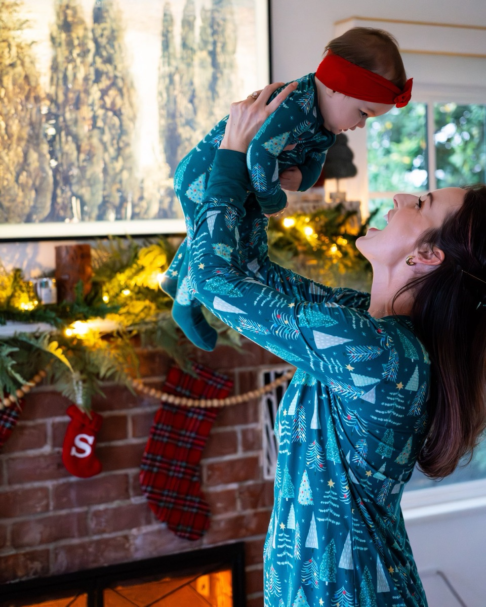
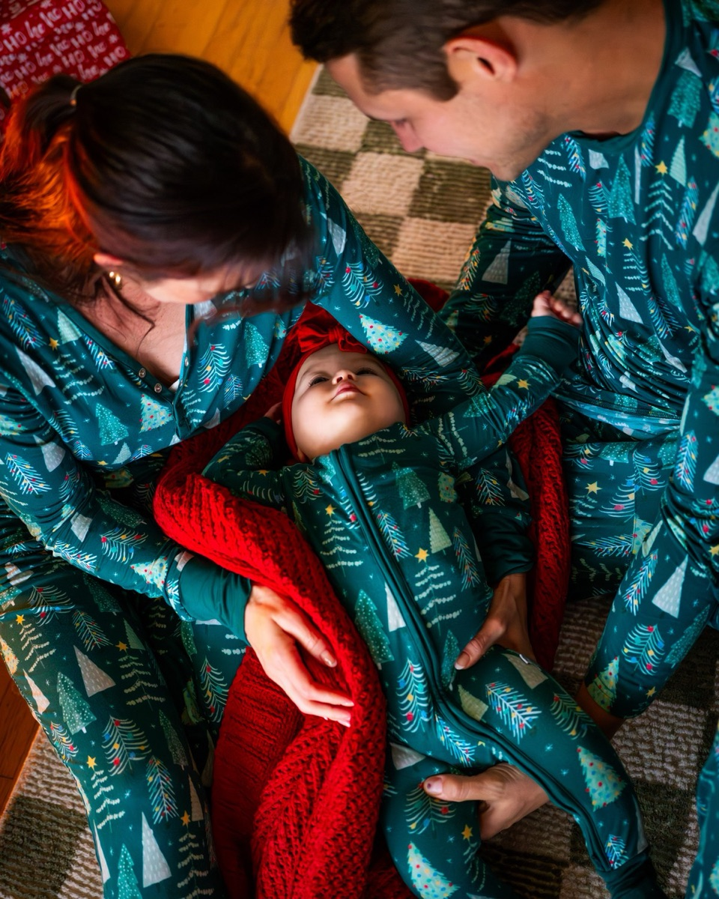
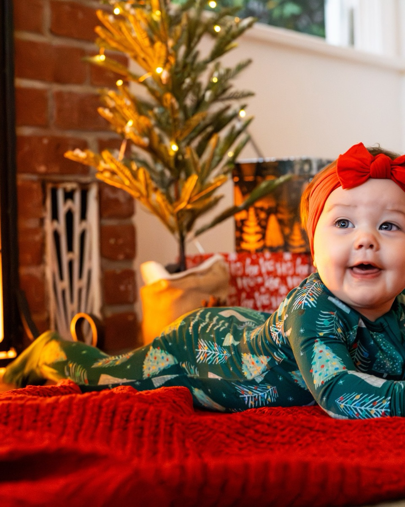

Baby posing prompts: where to put the parents’ hands
Eighteen prompts from the Prompted catalog for a baby in arms, sorted by the hold you are asking for, plus what to say to get a reaction out of somebody who does not know what a camera is.
A baby cannot be posed. That is the whole problem and also the solution, because it means the only thing in the frame you have any control over is the parent, and specifically the parent’s hands. Ask a mother to hold her four-month-old for a picture and she will hold him the way she holds him at the pediatrician’s office: squared up to you, both arms rigid, the baby facing forward like a parcel, her shoulders somewhere near her ears. She has done nothing wrong. She is holding a baby safely. It just photographs as a transaction rather than as the thing you were hired to record.
Everything below is about moving two sets of hands a few inches and then getting out of the way. The prompts are quoted word for word from the Prompted catalog with the pose each belongs to, sorted roughly the way a session with a baby runs. One practical note first: these catalog poses assume a baby with head and neck control, which in practice means past three or four months. A days-old newborn is a different job with different rules and this is not that guide. The reference frames are photographs from in-home sessions rather than studio setups, several shot around a fireplace at holiday time; what to take from them is the hand position, not the decor. If you have client work that would make a better reference, the contribute page explains how to add it.

Start with the hold the parent already uses
Before you direct anything, watch for thirty seconds. Every parent has a default hold, and it is almost always better than anything you would invent: high on the chest with both arms underneath, or settled on one hip with the weight taken by the hip bone rather than the arm. It is better because it is practiced, which means it is relaxed, which means the hands are doing what hands do when nobody is thinking about them. Fix only the two things a default hold gets wrong for a camera: the baby is usually too low, down at the waist with the faces a foot and a half apart, and the parent is facing you dead-on. Ask for the baby a hand-span higher so both heads sit in the same frame, turn the parent to three-quarters, and you have your first usable set.
You don't need to get her to look at me—just focus on cuddling her close and enjoying the moment.
Nervous clientFrom the pose “Hip cradle gaze”
Say this in the first minute. Getting the baby to look at the lens is the thing every parent believes is their job and the thing least likely to happen, and taking it off the table removes the reason they are holding the baby out in front of themselves like an exhibit. The cuddle brings the baby back in against the chest, which is where you wanted them.
Breathe in, drop your shoulders, and just look down at that sweet face.
CalmFrom the pose “Hip cradle gaze”
Three instructions in one line, and the order matters: the breath buys a second, dropping the shoulders fixes the commonest posture problem in a hold, and looking down sets the eyeline. Wait two or three breaths before the first frame rather than shooting on the word.
The holds worth blocking out deliberately
Three positions carry most of a baby session and are worth asking for by name. The chest hold above is your workhorse. The overhead lift is the one parents print: baby straight up at arm’s length, both hands flat under the torso, the parent’s head tipped back. Frame it from the parent’s chest height so the lift reads as vertical distance. The third is the close nuzzle, baby still on the chest and the parent’s face down at the cheek, which gets you the one frame in the gallery that is mostly skin and no teeth.
Two things about the lift. Only ask for it if the parent already does it at home, and say out loud to keep both hands under the baby rather than under the arms. A parent who looks uncertain produces a photograph of somebody looking uncertain. If there is any hesitation, go to the nuzzle and lose nothing.
Take a slow breath out and just take in how tiny she is in your hands.
CalmFrom the pose “Mantel overhead lift”
For the top of the lift, once the arms are extended and the parent is waiting to be told what face to make. It names what they are already feeling instead of asking for an expression, and the words in your hands do quiet work: they point the attention at the contact rather than at you.
Give her a little airplane lift and make your absolute best funny noise.
PlayfulFrom the pose “Mantel overhead lift”
Straight after the calm version, same setup, for the other half of the pair. The noise is the part that matters: a baby held overhead looks down at a silent parent with mild confusion and at an absurd sound with an open-mouthed grin. Shoot the second noise, not the first.
You don't need to look at the camera at all. Just keep your eyes locked on that sweet face.
Nervous clientFrom the pose “Mantel overhead lift”
For the parent who keeps breaking the pose to check in with you, usually with an apology attached. Releasing them from the camera is the only thing that stops it, and it has to be said as permission rather than correction. Then stop giving feedback, because every reassuring noise is another reason to look over.
Nuzzle your nose right into her cheek and make a little silly sound.
PlayfulFrom the pose “Hip cradle gaze”
The nuzzle, as an instruction with two steps. The nose into the cheek gets the faces touching and the sound turns it from a posed kiss into a reaction. Get close and shoot wide open; this one lives or dies on whether you can see the baby’s eyes close.
Two parents, one baby, four hands
Two parents and an infant is the hardest arrangement in family work, because the baby takes up both of somebody’s arms and the other adult is left standing beside it with nothing to do. The usual outcome is one hand hovering near the baby’s back, not touching, which reads as exactly what it is: a person who was not given a job. Fix it by putting the baby between them rather than in one set of arms. Sit them both on the floor facing each other, legs tucked in to make a cradle, baby on a blanket across their laps, and shoot straight down from above. Now all four hands have somewhere to be, along the baby’s sides and legs, and both faces sit at the same distance from the lens.

You don't have to look up at me at all. Just keep your eyes right on her.
Nervous clientFrom the pose “Lap cradle overhead”
Essential for the overhead angle, because standing above two seated people is unusual enough that both will tip their heads back to find you. Say it before you climb up and again once you are over them. The frame only works with both faces angled down at the baby.
Take a slow breath out and just lean in as close to her as you can.
CalmFrom the pose “Lap cradle overhead”
Leaning in closes the triangle. From directly above, six inches between three heads looks like two feet, and asking for as close as they can get beats describing the geometry.
See if you two can get a smile out of her without making any sound.
PlayfulFrom the pose “Lap cradle overhead”
A game with a constraint in it, and the constraint is why it works: without sound both parents resort to faces, and both do it at once. Whether the baby smiles is almost beside the point. You are photographing two adults pulling expressions they would never pull on request.
Put the parents’ eyes on the baby, not on you
Almost every prompt in a baby session is an eyeline instruction in disguise. Two parents smiling at the lens with a baby between them looking the wrong way is a frame you have seen a thousand times and nobody keeps. Two people looking at their child is the one ordered at sixteen by twenty. Parents believe looking at the camera is the deal they signed up for, so they keep returning to it, and each time drags the baby’s attention past you as well. Say the permission out loud, more than once, and mean it enough to stop acknowledging them when they check.
You don't need to look at me at all—just focus entirely on making her laugh.
Nervous clientFrom the pose “Between shoulders giggle”
The strongest version, because it replaces what you are taking away with a specific job. Not looking at the camera is a negative and hard to hold; making her laugh has a result they can hear. Shoot low, at the baby’s eye level, and keep focus on the baby while the parents work.
Don't worry about getting her to look at the lens. Just stand right behind my shoulder and do whatever makes her smile at home.
Nervous clientFrom the pose “Gift box solo sit”
Use this when the baby is sitting on their own and both parents are standing behind you feeling useless. It gives them a position, right behind your shoulder, and a job defined by what they already do at home rather than anything you would have to teach them in ten seconds.
The noise has to come from behind your shoulder
A baby looks at whatever is making the interesting sound, which settles most of the direction in this kind of session and is why a parent standing beside you is worse than useless: the baby turns ninety degrees away from the lens and you get an ear. Put whoever is making noise directly behind your head, and be specific about who you mean and when. Count it out. The first attempt from a self-conscious adult is always too quiet; the second, once they have heard themselves and nobody laughed, is the one that works.
Dad, give me your best funny face or sound on the count of three. One, two, three!
PlayfulFrom the pose “Between shoulders giggle”
Named person, named task, countdown. The count does more work than it looks: it tells you when to be ready, and it commits a reluctant adult publicly enough that backing out is more awkward than following through.
Make the silliest sound you make at home and let's see what face she gives you.
PlayfulFrom the pose “Rug gift watch”
The silliest sound you make at home is a better brief than be funny, because it is a thing they own rather than a performance invented in front of a stranger. It also tends to be the sound the baby already has a response to.
Stand right over my shoulder and make that squeaky voice she loves.
PlayfulFrom the pose “Hearth tummy time”
Position first, then the sound. Over my shoulder is the operative instruction, worth pointing at rather than describing. That she loves matters too: a familiar voice gets a recognition face, not the startled one a new noise produces.
Let her hold the box and take her time exploring the paper.
CalmFrom the pose “Gift box solo sit”
The opposite approach, worth keeping in reserve. An object in the hands anchors a baby who is otherwise toppling sideways, and exploring the paper buys thirty uninterrupted seconds of a face that is genuinely interested in something. Shoot quietly and do not speed it up.
When the baby is on the floor
Get the baby out of everybody’s arms for a few frames. Tummy time on a blanket, propped on the forearms, is a position most babies at this age hold happily for a couple of minutes, and it gives you the baby alone in the frame at their own eye level. Lie down. All the way down, lens at the height of the baby’s eyes, because the difference between that and a shot from your knees is the difference between a portrait and a photograph of the carpet. Keep a parent within arm’s reach of the frame but out of it.

Take all the time you need to settle her in. We work entirely on her schedule.
Nervous clientFrom the pose “Hearth tummy time”
Say it early and then behave as though you meant it. Parents of babies arrive braced to apologise for a feed, a change or twenty minutes of crying, and the apology costs them more than the delay costs you. Build the schedule so this sentence is true, then put the camera down when it is needed.
When there are older siblings
Add a three-year-old and the arithmetic changes. The baby is now the second most unpredictable person present, and the standard mistake is to arrange the group around the baby and then ask the older child to hold still while you fix it. Give the siblings something physical to do, aim everyone’s attention at the baby, and shoot continuously rather than composing. Keep the baby high enough to be seen and the older children in front or at the parents’ sides rather than reaching across.
Everybody close your eyes except the baby. They can supervise.
CalmFrom the pose “Lift the littlest”
It stops the older children hunting for the lens and is funny enough that the laugh arrives on its own. The baby, who has no idea what was asked, is then the only one looking around.
Let the kids get heavy in your arms. Heavy is the picture.
CalmFrom the pose “Everyone look at baby”
For the parent holding a toddler on one arm and an infant on the other, trying to look effortless. Permission to let the weight show changes the posture: shoulders settle, the children slump in, and the picture stops being a presentation.
What to tell the parents before they book
Two sentences in the pre-session email save you half the hour. First: hold the baby the way you normally hold them, because that is what we are photographing. Second: we work on the baby’s schedule, so feed them whenever they need it and expect a break. A parent who has read both arrives without the belief that their job is to produce a smiling, camera-facing infant on demand, and that belief is the biggest obstacle in this kind of session. Book for an hour after a nap rather than at the time that suits your light.
Then plan for one window and nothing else. These poses are built around a single soft source indoors, which is the same problem solved in window light indoors, and the low-light version of the same setup is in holiday card sessions in low light. Once the baby is sitting up and crawling you are into a different job, and the task-not-a-face approach that gets you through it is in directing kids without bribing them.
The Fall Mini Session Shot List
About 25 poses grouped by family size, each with the words to say. A free PDF, sent once you confirm your address.
One email to confirm, one with the PDF. Unsubscribe any time. No selling, no sharing.
Every prompt in this guide is in the app, with the pose it belongs to.
Prompted is the posing app that is only a posing app: 259 poses, each with word-for-word prompts in four tones, filtered to the light you're standing in. The sun tracker is free forever.
Get Prompted on the App Store